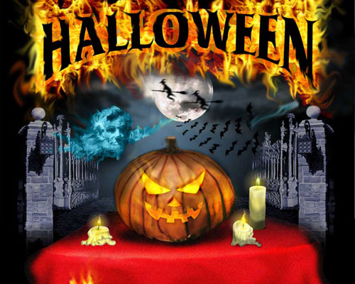
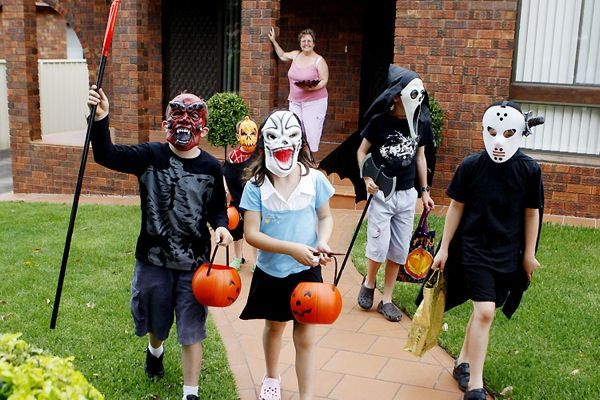
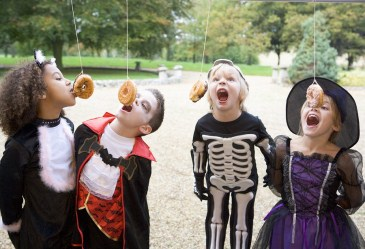

Hisrory
Gaelic and Welsh influence
An early 20th-century Irish Hallowe'en mask displayed at the Museum of Country Life. Today's Halloween customs are thought to have been influenced by folk customs and beliefs from the Celtic-speaking countries, some of which have pagan roots, and others which may be rooted in Celtic Christianity.Indeed, Jack Santino, a folklorist, writes that "the sacred and the religious are a fundamental context for understanding Halloween in Northern Ireland, but there was throughout Ireland an uneasy truce existing between customs and beliefs associated with Christianity and those associated with religions that were Irish before Christianity arrived". Historian Nicholas Rogers, exploring the origins of Halloween, notes that while "some folklorists have detected its origins in the Roman feast of Pomona, the goddess of fruits and seeds, or in the festival of the dead called Parentalia, it is more typically linked to the Celtic festival of Samhain", which comes from the Old Irish for "summer's end". Samhain (pronounced sah-win or sow-in) was the first and most important of the four quarter days in the medieval Gaelic calendar and was celebrated in Ireland, Scotland and the Isle of Man. It was held on or about 31 October – 1 November and kindred festivals were held at the same time of year by the Brittonic Celts; for example Calan Gaeaf (in Wales), Kalan Gwav (in Cornwall) and Kalan Goañv (in Brittany). Samhain and Calan Gaeaf are mentioned in some of the earliest Irish and Welsh literature. The names have been used by historians to refer to Celtic Halloween customs up until the 19th century, and are still the Gaelic and Welsh names for Halloween.
Snap-Apple Night, painted by Daniel Maclise in 1833, shows people feasting and playing divination games on Halloween in Ireland. Samhain/Calan Gaeaf marked the end of the harvest season and beginning of winter or the 'darker half' of the year.Like Beltane/Calan Mai, it was seen as a liminal time, when the spirits or fairies (the Aos Sí) could more easily come into our world and were particularly active. Most scholars see the Aos Sí as "degraded versions of ancient gods whose power remained active in the people's minds even after they had been officially replaced by later religious beliefs". The Aos Sí were both respected and feared, with individuals often invoking the protection of God when approaching their dwellings. At Samhain, it was believed that the Aos Sí needed to be propitiated to ensure that the people and their livestock survived the winter. Offerings of food and drink, or portions of the crops, were left for the Aos Sí. The souls of the dead were also said to revisit their homes. Places were set at the dinner table or by the fire to welcome them. The belief that the souls of the dead return home on one night or day of the year seems to have ancient origins and is found in many cultures throughout the world. In 19th century Ireland, "candles would be lit and prayers formally offered for the souls of the dead. After this the eating, drinking, and games would begin". Throughout the Gaelic and Welsh regions, the household festivities included rituals and games intended to divine one's future, especially regarding death and marriage. Nuts and apples were often used in these divination rituals. Special bonfires were lit and there were rituals involving them. Their flames, smoke and ashes were deemed to have protective and cleansing powers, and were also used for divination. It is suggested that the fires were a kind of imitative or sympathetic magic – they mimicked the Sun, helping the "powers of growth" and holding back the decay and darkness of winter.Christian minister Eddie J. Smith suggests that the bonfires were also used to scare witches of "their awaiting punishment in hell".
A traditional Irish Halloween turnip (rutabaga) lantern on display in the Museum of Country Life, Ireland During the early modern era in Ireland, Scotland, the Isle of Man and Wales, the festival included mumming and guising, the latter of which goes back at least as far as the 16th century. This involved people going house-to-house in costume (or in disguise), usually reciting verses or songs in exchange for food. It may have come from the Christian custom of souling (see below) or it may have a Gaelic folk origin, with the costumes being a means of imitating, or disguising oneself from, the Aos Sí. In Scotland, youths went house-to-house on 31 October with masked, painted or blackened faces, often threatening to do mischief if they were not welcomed. F. Marian McNeill suggests the ancient festival included people in costume representing the spirits, and that faces were marked (or blackened) with ashes taken from the sacred bonfire. In parts of Wales, men went about dressed as fearsome beings called gwrachod. In the late 19th and early 20th century, young people in Glamorgan and Orkney dressed as the opposite gender. In parts of southern Ireland, the guisers included a hobby horse. A man dressed as a Láir Bhán (white mare) led youths house-to-house reciting verses—some of which had pagan overtones—in exchange for food. If the household donated food it could expect good fortune from the 'Muck Olla'; not doing so would bring misfortune. Elsewhere in Europe, mumming and hobby horses were part of other yearly festivals. However, in the Celtic-speaking regions they were "particularly appropriate to a night upon which supernatural beings were said to be abroad and could be imitated or warded off by human wanderers". As early as the 18th century, "imitating malignant spirits" led to playing pranks in Ireland and the Scottish Highlands. Wearing costumes at Halloween spread to England in the 20th century, as did the custom of playing pranks. The "traditional illumination for guisers or pranksters abroad on the night in some places was provided by turnips or mangel wurzels, hollowed out to act as lanterns and often carved with grotesque faces to represent spirits or goblins". These were common in parts of Ireland and the Scottish Highlands in the 19th century, as well as in Somerset (see Punkie Night). In the 20th century they spread to other parts of England and became generally known as jack-o'-lanterns.
Christian influence

Today's Halloween customs are also thought to have been influenced by Christian dogma and practices derived from it. Halloween falls on the evening before the Christian holy days of All Hallows' Day (also known as All Saints' or Hallowmas) on 1 November and All Souls' Day on 2 November, thus giving the holiday on 31 October the full name of All Hallows' Eve (meaning the evening before All Hallows' Day). Since the time of the primitive Church, major feasts in the Christian Church (such as Christmas, Easter and Pentecost) had vigils which began the night before, as did the feast of All Hallows'. These three days are collectively referred to as Allhallowtide and are a time for honoring the saints and praying for the recently departed souls who have yet to reach Heaven. All Saints was introduced in the year 609, but was originally celebrated on 13 May. In 835, it was switched to 1 November (the same date as Samhain) at the behest of Pope Gregory IV. Some suggest this was due to Celtic influence, while others suggest it was a Germanic idea. It is also suggested that the change was made on the "practical grounds that Rome in summer could not accommodate the great number of pilgrims who flocked to it", and perhaps because of public health considerations regarding Roman Fever – a disease that claimed a number of lives during the sultry summers of the region.
By the end of the 12th century they had become holy days of obligation across Europe and involved such traditions as ringing church bells for the souls in purgatory. In addition, "it was customary for criers dressed in black to parade the streets, ringing a bell of mournful sound and calling on all good Christians to remember the poor souls." "Souling", the custom of baking and sharing soul cakes for all christened souls, has been suggested as the origin of trick-or-treating. The custom dates back at least as far as the 15th century and was found in parts of England, Belgium, Germany, Austria and Italy. Groups of poor people, often children, would go door-to-door during Allhallowtide, collecting soul cakes, in exchange for praying for the dead, especially the souls of the givers' friends and relatives. Shakespeare mentions the practice in his comedy The Two Gentlemen of Verona (1593). The custom of wearing costumes has been explicated by Prince Sorie Conteh, who wrote: "It was traditionally believed that the souls of the departed wandered the earth until All Saints' Day, and All Hallows' Eve provided one last chance for the dead to gain vengeance on their enemies before moving to the next world. In order to avoid being recognized by any soul that might be seeking such vengeance, people would don masks or costumes to disguise their identities". In the Middle Ages, churches displayed the relics of martyred saints and those parishes that were too poor to have relics let parishioners dress up as the saints instead, a practice that some Christians continue in Halloween celebrations today. Folklorist Kingsley Palmer, in addition to others, has suggested that the carved jack-o'-lantern, a popular symbol of Halloween, originally represented the souls of the dead. On Halloween, in medieval Europe, "fires [were] lit to guide these souls on their way and deflect them from haunting honest Christian folk." In addition, households in Austria, England, and Ireland often had "candles burning in every room to guide the souls back to visit their earthly homes". These were known as "soul lights". Many Christians in continental Europe, especially in France, acknowledged "a belief that once a year, on Hallowe'en, the dead of the churchyards rose for one wild, hideous carnival," known as the danse macabre, which has been commonly depicted in church decoration, especially on the walls of cathedrals, monasteries, and cemeteries. Christopher Allmand and Rosamond McKitterick write in The New Cambridge Medieval History that "Christians were moved by the sight of the Infant Jesus playing on his mother's knee; their hearts were touched by the Pietà; and patron saints reassured them by their presence. But, all the while, the danse macabre urged them not to forget the end of all earthly things." This danse macabre, which was enacted by "Christian village children [who] celebrated the vigil of All Saints" in the 16th Century, has been suggested as the predecessor of modern day costume parties on this same day.

In parts of Britain, these customs came under attack during the Reformation as some Protestants berated purgatory as a "popish" doctrine incompatible with the notion of predestination. Thus, for some Nonconformist Protestants, the theology of All Hallows’ Eve was redefined; without the doctrine of purgatory, "the returning souls cannot be journeying from Purgatory on their way to Heaven, as Catholics frequently believe and assert. Instead, the so-called ghosts are thought to be in actuality evil spirits. As such they are threatening." Other Protestants maintained belief in an intermediate state, known as Hades (Bosom of Abraham), and continued to observe the original customs, especially souling, candlelit processions and the ringing of church bells in memory of the dead. With regard to the evil spirits, on Halloween, "barns and homes were blessed to protect people and livestock from the effect of witches, who were believed to accompany the malignant spirits as they traveled the earth." In the 19th century, in some rural parts of England, families gathered on hills on the night of All Hallows' Eve. One held a bunch of burning straw on a pitchfork while the rest knelt around him in a circle, praying for the souls of relatives and friends until the flames went out. This was known as teen'lay, derived either from the Old English tendan (meaning to kindle) or a word related to Old Irish tenlach (meaning hearth). The rising popularity of Guy Fawkes Night (5 November) from 1605 onward, saw many Halloween traditions appropriated by that holiday instead, and Halloween's popularity waned in Britain, with the noteworthy exception of Scotland. There and in Ireland, they had been celebrating Samhain and Halloween since at least the early Middle Ages, and the Scottish kirk took a more pragmatic approach to Halloween, seeing it as important to the life cycle and rites of passage of communities and thus ensuring its survival in the country.
In France, some Christian families, on the night of All Hallows' Eve, prayed beside the graves of their loved ones, setting down dishes full of milk for them. On Halloween, in Italy, some families left a large meal out for ghosts of their passed relatives, before they departed for church services. In Spain, on this night, special pastries are baked, known as "bones of the holy" (Spanish: Huesos de Santo) and put them on the graves of the churchyard, a practice that continues to this day.
Spread to North America
Lesley Bannatyne and Cindy Ott both write that Anglican colonists in the South and Catholic colonists in Maryland "recognized All Hallow's Eve in their church calendars", although the Puritans of New England maintained strong opposition to the holiday, along with other traditional celebrations of the established Church, including Christmas. Mass Irish and Scottish immigration during the 19th century increased the holiday’s celebration in the United States. "In Cajun areas, a nocturnal Mass was said in cemeteries on Halloween night. Candles that had been blessed were placed on graves, and families sometimes spent the entire night at the graveside." Confined to the immigrant communities during the mid-19th century, it was gradually assimilated into mainstream society and by the first decade of the 20th century it was being celebrated coast to coast by people of all social, racial and religious backgrounds.
The annual New York Halloween Parade, initiated in 1974 by puppeteer and mask maker Ralph Lee of the Lower Manhattan neighborhood of Greenwich Village in New York City, is the world's largest Halloween parade and America's only major nighttime parade, attracting more than 60,000 costumed participants, 2 million in-person spectators, and a worldwide television audience of over 100 million.
Sumbols

Development of artifacts and symbols associated with Halloween formed over time. Jack-o'-lanterns are traditionally carried by guisers on All Hallows' Eve in order to frighten evil spirits. There is a popular Irish Christian folktale associated with the jack-o'-lantern, which in lore, is said to represent a "soul who has been denied entry into both heaven and hell":On route home after a night's drinking, Jack encounters the Devil and tricks him into climbing a tree. A quick-thinking Jack etches the sign of the cross into the bark, thus trapping the Devil. Jack strikes a bargain that Satan can never claim his soul. After a life of sin, drink, and mendacity, Jack is refused entry to heaven when he dies. Keeping his promise, the Devil refuses to let Jack into hell and throws a live coal straight from the fires of hell at him. It was a cold night, so Jack places the coal in a hollowed out turnip to stop it from going out, since which time Jack and his lantern have been roaming looking for a place to rest.
In Ireland and Scotland, the turnip has traditionally been carved during Halloween, but immigrants to North America used the native pumpkin, which is both much softer and much larger – making it easier to carve than a turnip. The American tradition of carving pumpkins is recorded in 1837 and was originally associated with harvest time in general, not becoming specifically associated with Halloween until the mid-to-late 19th century.
The modern imagery of Halloween comes from many sources, including Christian eschatology, national customs, works of Gothic and horror literature (such as the novels Frankenstein and Dracula) and classic horror films (such as Frankenstein and The Mummy). Imagery of the skull, a reference to Golgotha, in the Christian tradition, serves as "a reminder of death and the transitory quality of human life" and is consequently found in memento mori and vanitas compositions; skulls have therefore been commonplace in Halloween, which touches on this theme. Traditionally, the back walls of churches are "decorated with a depiction of the Last Judgment, complete with graves opening and the dead rising, with a heaven filled with angels and a hell filled with devils," a motif that has permeated the observance of this triduum. One of the earliest works on the subject of Halloween is from Scottish poet John Mayne, who, in 1780, made note of pranks at Halloween; "What fearfu' pranks ensue!", as well as the supernatural associated with the night, "Bogies" (ghosts), influencing Robert Burns' "Halloween" (1785). Elements of the autumn season, such as pumpkins, corn husks and scarecrows, are also prevalent. Homes are often decorated with these types of symbols around Halloween. Halloween imagery includes themes of death, evil, and mythical monsters. Black, orange, and sometimes purple are Halloween's traditional colors.
Trick-or-treating and guising
Trick-or-treating is a customary celebration for children on Halloween. Children go in costume from house to house, asking for treats such as candy or sometimes money, with the question, "Trick or treat?" The word "trick" refers to "threat" to perform mischief on the homeowners or their property if no treat is given. The practice is said to have roots in the medieval practice of mumming, which is closely related to souling. John Pymm writes that "many of the feast days associated with the presentation of mumming plays were celebrated by the Christian Church." These feast days included All Hallows' Eve, Christmas, Twelfth Night and Shrove Tuesday. Mumming, practiced in Germany, Scandinavia and other parts of Europe, involved masked persons in fancy dress who "paraded the streets and entered houses to dance or play dice in silence."
In England, from the medieval period, up until the 1930s, people practiced the Christian custom of souling on Halloween, which involved groups of soulers, both Protestant and Catholic, going from parish to parish, begging the rich for soul cakes, in exchange for praying for the souls of the givers and their friends. In Scotland and Ireland, guising – children disguised in costume going from door to door for food or coins – is a traditional Halloween custom, and is recorded in Scotland at Halloween in 1895 where masqueraders in disguise carrying lanterns made out of scooped out turnips, visit homes to be rewarded with cakes, fruit and money. The practice of guising at Halloween in North America is first recorded in 1911, where a newspaper in Kingston, Ontario reported children going "guising" around the neighborhood.
Souling was a Christian practice carried out in many English towns on Halloween and Christmas. American historian and author Ruth Edna Kelley of Massachusetts wrote the first book length history of Halloween in the US; The Book of Hallowe'en (1919), and references souling in the chapter "Hallowe'en in America". In her book, Kelley touches on customs that arrived from across the Atlantic; "Americans have fostered them, and are making this an occasion something like what it must have been in its best days overseas. All Halloween customs in the United States are borrowed directly or adapted from those of other countries".
While the first reference to "guising" in North America occurs in 1911, another reference to ritual begging on Halloween appears, place unknown, in 1915, with a third reference in Chicago in 1920. The earliest known use in print of the term "trick or treat" appears in 1927, in the Blackie Herald Alberta, Canada.
The thousands of Halloween postcards produced between the turn of the 20th century and the 1920s commonly show children but not trick-or-treating. Trick-or-treating does not seem to have become a widespread practice until the 1930s, with the first U.S. appearances of the term in 1934, and the first use in a national publication occurring in 1939.
An automobile trunk at a trunk-or-treat event at St. John Lutheran Church and Early Learning Center in Darien, Illinois A popular variant of trick-or-treating, known as trunk-or-treating (or Halloween tailgaiting), occurs when "children are offered treats from the trunks of cars parked in a church parking lot," or sometimes, a school parking lot. In a trunk-or-treat event, the trunk (boot) of each automobile is decorated with a certain theme, such as those of children's literature, movies, scripture, and job roles. Because the traditional style of trick-or-treating was made impossible after Hurricane Katrina, trunk-or-treating provided comfort to those whose homes were devastated. Trunk-or-treating has grown in popularity due to its perception as being more safe than going door to door, a point that resonates well with parents, as well as the fact that it "solves the rural conundrum in which homes [are] built a half-mile apart".
Games and other activities
There are several games traditionally associated with Halloween parties. One common game is dunking or apple bobbing, which may be called "dooking" in Scotland in which apples float in a tub or a large basin of water and the participants must use their teeth to remove an apple from the basin. The practice is thought by some to have derived from the Roman practices in celebration of Pomona. A variant of dunking involves kneeling on a chair, holding a fork between the teeth and trying to drive the fork into an apple. Another common game involves hanging up treacle or syrup-coated scones by strings; these must be eaten without using hands while they remain attached to the string, an activity that inevitably leads to a very sticky face.
Some games traditionally played at Halloween are forms of divination. In All Hallows' Eve celebrations during the Middle Ages, these activities historically occurred only in rural areas of medieval Europe and were only done by a "rare few" as these were considered to be "deadly serious" practices. A traditional Scottish form of divining one's future spouse is to carve an apple in one long strip, then toss the peel over one's shoulder. The peel is believed to land in the shape of the first letter of the future spouse's name. Unmarried women were told that if they sat in a darkened room and gazed into a mirror on Halloween night, the face of their future husband would appear in the mirror. However, if they were destined to die before marriage, a skull would appear. The custom was widespread enough to be commemorated on greeting cards from the late 19th century and early 20th century.
A common custom includes picking and purchasing pumpkins from patches Another game/superstition that was enjoyed in the early 1900s involved walnut shells. People would write fortunes in milk on white paper. After drying, the paper was folded and placed in walnut shells. When the shell was warmed, milk would turn brown therefore the writing would appear on what looked like blank paper. Folks would also play fortune teller. In order to play this game, symbols were cut out of paper and placed on a platter. Someone would enter a dark room and was ordered to put her hand on a piece of ice then lay it on a platter. Her "fortune" would stick to the hand. Paper symbols included: dollar sign-wealth, button-bachelorhood, thimble-spinsterhood, clothespin- poverty, rice-wedding, umbrella- journey, caldron-trouble, 4-leaf clover- good luck, penny-fortune, ring-early marriage, and key-fame.
The telling of ghost stories and viewing of horror films are common fixtures of Halloween parties. Episodes of television series and Hallowe'en-themed specials (with the specials usually aimed at children) are commonly aired on or before Halloween, while new horror films are often released theatrically before Halloween to take advantage of the atmosphere.
Haunted attractions

Haunted attractions are entertainment venues designed to thrill and scare patrons. Most attractions are seasonal Halloween businesses. Origins of these paid scare venues are difficult to pinpoint, but it is generally accepted that they were first commonly used by the Junior Chamber International (Jaycees) for fundraising. They include haunted houses, corn mazes, and hayrides, and the level of sophistication of the effects has risen as the industry has grown. Haunted attractions in the United States bring in an estimated $300–500 million each year, and draw some 400,000 customers, although press sources writing in 2005 speculated that the industry had reached its peak at that time. This maturing and growth within the industry has led to technically more advanced special effects and costuming, comparable with that of Hollywood films.
Food

On All Hallows' Eve, many Western Christian denominations encourage abstinence from meat, giving rise to a variety of vegetarian foods associated with this day.
Because in the Northern Hemisphere Halloween comes in the wake of the yearly apple harvest, candy apples (known as toffee apples outside North America), caramel or taffy apples are common Halloween treats made by rolling whole apples in a sticky sugar syrup, sometimes followed by rolling them in nuts.
At one time, candy apples were commonly given to trick-or-treating children, but the practice rapidly waned in the wake of widespread rumors that some individuals were embedding items like pins and razor blades in the apples in the United States. While there is evidence of such incidents, relative to the degree of reporting of such cases, actual cases involving malicious acts are extremely rare and have never resulted in serious injury. Nonetheless, many parents assumed that such heinous practices were rampant because of the mass media. At the peak of the hysteria, some hospitals offered free X-rays of children's Halloween hauls in order to find evidence of tampering. Virtually all of the few known candy poisoning incidents involved parents who poisoned their own children's candy.
One custom that persists in modern-day Ireland is the baking (or more often nowadays, the purchase) of a barmbrack (Irish: báirín breac), which is a light fruitcake, into which a plain ring, a coin and other charms are placed before baking. It is said that those who get a ring will find their true love in the ensuing year. This is similar to the tradition of king cake at the festival of Epiphany.
- Barmbrack (Ireland)
- Bonfire toffee (Great Britain)
- Candy apples/toffee apples (Great Britain and Ireland)
- Candy apples, Candy corn, candy pumpkins (North America)
- Monkey nuts (peanuts in their shells) (Scotland and Ireland)
- Caramel apples
- Caramel corn
- Colcannon (Ireland; see below)
- Novelty candy shaped like skulls, pumpkins, bats, worms, etc.
- Pumpkin, pumpkin pie, pumpkin bread
- Roasted pumpkin seeds
- Roasted sweet corn
- Soul cakes